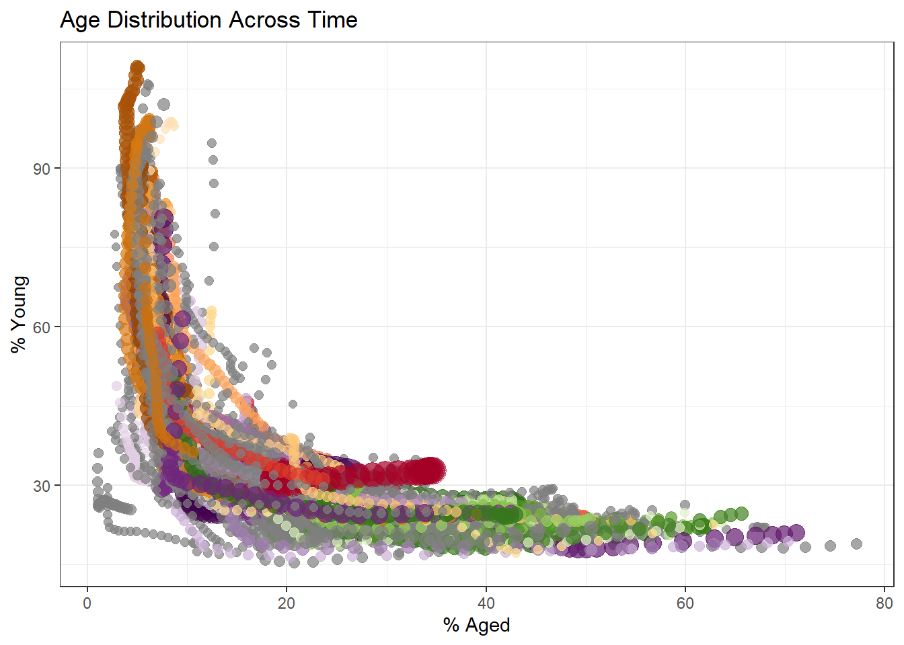
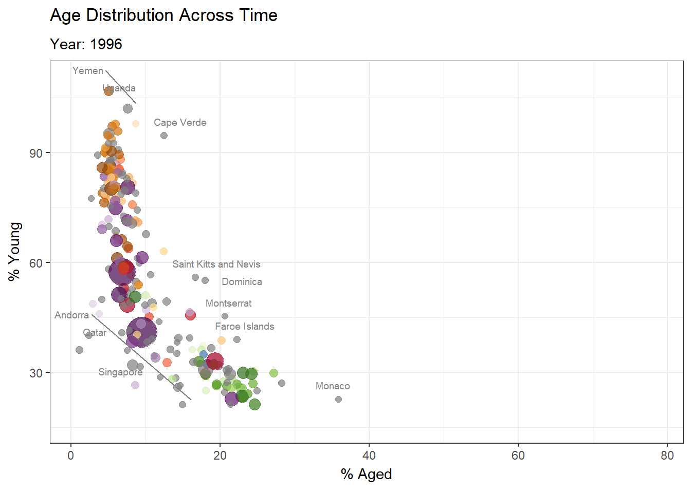
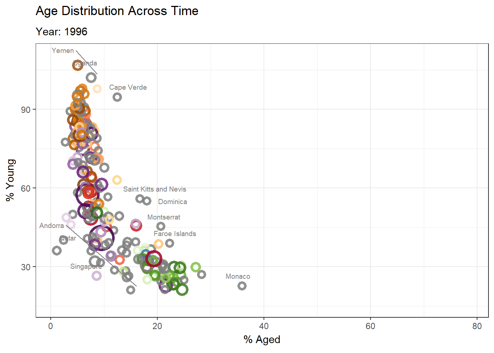
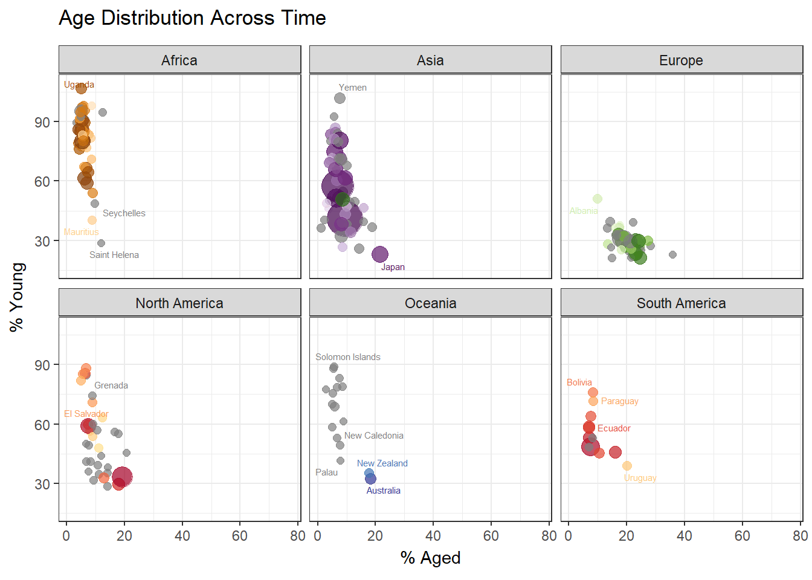
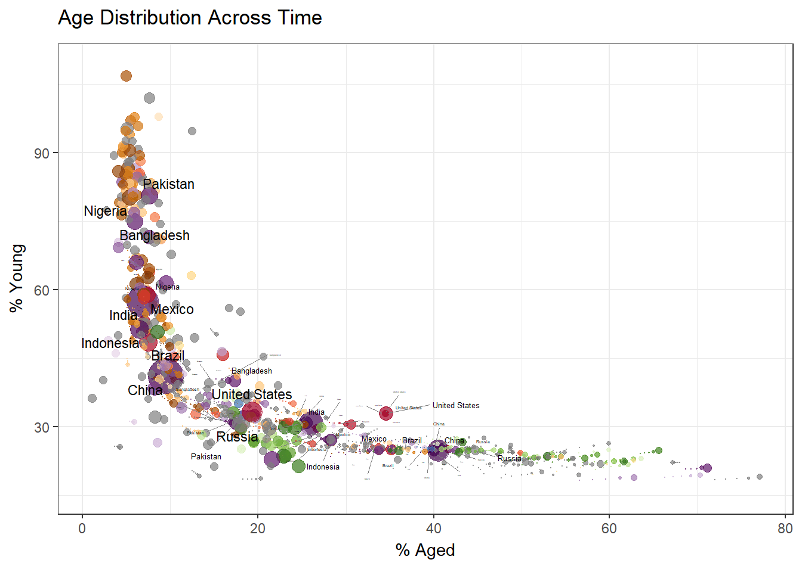
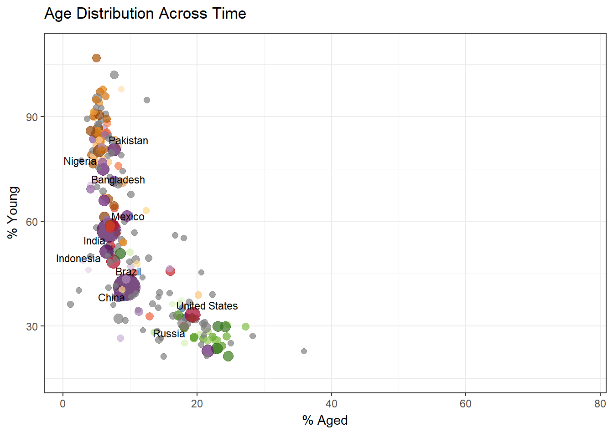
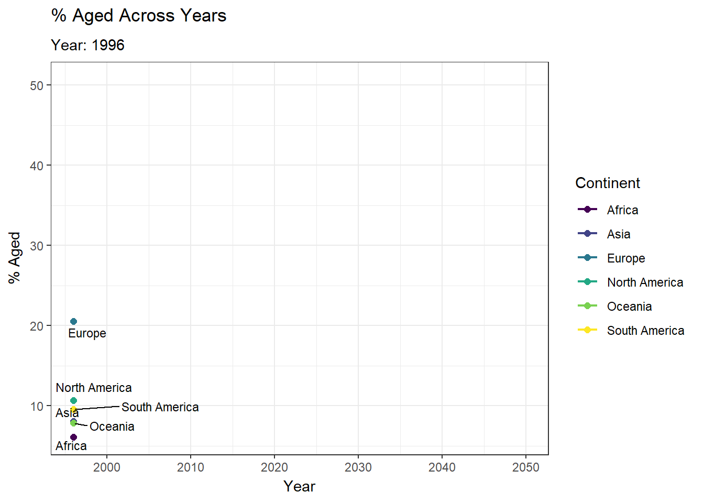

Show the code
pacman::p_load(readxl, gifski, gapminder,
plotly, gganimate, tidyverse,
ggrepel, ggpp)When telling a visually-driven data story, animated graphics tend to attract the interest of the audience and make deeper impression than static graphics. In this hands-on exercise, we will learn how to create animated data visualisation by using gganimate and plotly r packages. At the same time, we will also learn how to:
reshape data by using tidyr package, and
process, wrangle and transform data by using dplyr package.
When creating animations, the plot does not actually move. Instead, many individual plots are built and then stitched together as movie frames, just like an old-school flip book or cartoon.
Each frame is a different plot when conveying motion, which is built using some relevant subset of the aggregate data. The subset drives the flow of the animation when stitched back together.
Before we dive into the steps for creating an animated statistical graph, it’s important to understand some of the key concepts and terminology related to this type of visualization.
Frame: In an animated line graph, each frame represents a different point in time or a different category. When the frame changes, the data points on the graph are updated to reflect the new data.
Animation Attributes: The animation attributes are the settings that control how the animation behaves. For example, you can specify the duration of each frame, the easing function used to transition between frames, and whether to start the animation from the current frame or from the beginning.
We will use p_load from pacman package to check, install and load the following R packages:
| Package | Description |
|---|---|
| plotly | R library for plotting interactive statistical graphs. |
| gganimate | An ggplot extension for creating animated statistical graphs. |
| gifski | Converts video frames to GIF animations. |
| gapminder | An excerpt of the data available at Gapminder.org. |
| tidyverse | A family of modern R packages for data science. |
| ggpp | Supports data labels and annotations for ggplot2. |
pacman::p_load(readxl, gifski, gapminder,
plotly, gganimate, tidyverse,
ggrepel, ggpp)In this hands-on exercise, the Data worksheet from GlobalPopulation Excel workbook will be used.
Write a code chunk to import Data worksheet from GlobalPopulation Excel workbook by using appropriate R package from tidyverse family.
col <- c("Country", "Continent")
globalPop <- read_xls("data/GlobalPopulation.xls",
sheet="Data") %>%
mutate(across(all_of(col), as.factor)) %>%
mutate(Year = as.integer(Year))read_xls() of readxl package is used to import the Excel worksheet.
mutate(across) of dplyr package is used to convert all character data type into factor for/across multiple columns.
This line applies the factor() function to each column specified in the col argument. Character to factor. It takes column indices or column names in strings format as inputs, and returns a data frame with new columns for each column in the input data frame, where each new column is the result of applying the specified function to the corresponding column in the input data frame.
The factor(.) is a way to specify the factor works as an argument.
mutate of dplyr package is used to convert data values of Year field into integer.
glimpse(globalPop)Rows: 6,204
Columns: 6
$ Country <fct> "Afghanistan", "Afghanistan", "Afghanistan", "Afghanistan",…
$ Year <int> 1996, 1998, 2000, 2002, 2004, 2006, 2008, 2010, 2012, 2014,…
$ Young <dbl> 83.6, 84.1, 84.6, 85.1, 84.5, 84.3, 84.1, 83.7, 82.9, 82.1,…
$ Old <dbl> 4.5, 4.5, 4.5, 4.5, 4.5, 4.6, 4.6, 4.6, 4.6, 4.7, 4.7, 4.7,…
$ Population <dbl> 21559.9, 22912.8, 23898.2, 25268.4, 28513.7, 31057.0, 32738…
$ Continent <fct> Asia, Asia, Asia, Asia, Asia, Asia, Asia, Asia, Asia, Asia,…There are 6 columns with numeric (int, dbl) and factor data types.
n_distinct(globalPop$Country)[1] 222n_distinct(globalPop$Continent)[1] 6There are 222 unique countries, spanning 6 continents in the dataset.
gganimate extends the grammar of graphics as implemented by ggplot2 to include the description of animation. It does this by providing a range of new grammar classes that can be added to the plot object in order to customise how it should change with time.
| Arguments | Description |
|---|---|
transition_*() |
Defines how the data should be spread out and how it relates to itself across time, i.e. you want your data to change. |
view_*() |
Defines how the positional scales should change along the animation, i.e. you want your viewpoint to change. |
shadow_*() |
Defines how data from other points in time should be presented in the given point in time, i.e. you want the animation to have memory. |
enter_*()/exit_*() |
Defines how new data should appear and how old data should disappear during the course of the animation. |
ease_aes() |
Defines how different aesthetics should be eased during transitions. |
In the code chunk below, the basic ggplot2 functions are used to create a static bubble plot. A bubble plot is created when a third numeric variable is assigned to size = argument inside a ggplot with geom_point.
p <- ggplot(data= globalPop,
aes(x= Old,
y=Young,
size= Population,
color=Country)) +
geom_point(alpha = 0.7,
show.legend = FALSE) +
scale_color_manual(values=country_colors) + #<<< 'country_colors' from Gapminder lib
scale_size(range= c(2,12)) + #<<<
labs(title = "Age Distribution Across Time",
x = '% Aged',
y= '% Young')+
theme_bw()
p
The scale_size(range= c(2,12)) sets the range of point sizes to be used in the plot to between 2 and 12.
Population is mapped to size aes in ggplot, thus this range parameter controls the min and max size of the points.
country_colors is a built-in named vector from the gapminder package. When we load gapminder, it automatically makes country_colors available.
Now we can incorporate the animation into a basic ggplot graph. Take note that when we run this code, the visual takes some time to render. This is because RStudio is creating a gif representation of our animated chart.
The individual tabs illustrate what each code segment does, and how they evolve when we replace certain sections with other functions.
In the code chunk below:
transition_time() of gganimate is used to create transition through a continuous variable, where there are distinct states in time (i.e. Year).
ease_aes() is used to control easing of aesthetics. The default is linear. Other methods are: quadratic, cubic, quartic, quintic, sine, circular, exponential, elastic, back, and bounce.
The data points ‘move’ corresponding to the transition of each country through time.
p +
transition_time(Year) +
ease_aes("linear")pt <- ggplot(data= globalPop,
aes(x= Old,
y=Young,
size= Population,
color=Country)) +
geom_point(alpha = 0.7,
show.legend = FALSE) +
scale_color_manual(values=country_colors) + #<<< 'country_colors' from Gapminder lib
scale_size(range= c(2,12)) +
labs(title = "Age Distribution Across Time",
subtitle ='Year: {frame_time}',
x = '% Aged',
y= '% Young')+
geom_text(data=globalPop, #<<<
aes(x=Old + 1.2, #<<< Add/minus a bit to or from the x mapping to shift labels left/right
y=Young + 1.2, #<<< Add/minus a bit to or from the y mapping to shift labels up/down
label=Country,
color = "Black", #<<< Some Country colours were too light when color = Country was used
hjust=0,
vjust= 1.2),
size=2.5,
show.legend = FALSE)+ #<<< Should be outside of aes() of geom_text()
theme_bw() +
transition_time(Year) +
ease_aes("linear")
pt
geom_text() with geom_text_repel() from our last chapter gives us the following results.pr <- ggplot(data= globalPop,
aes(x= Old,
y=Young,
size= Population,
color=Country)) +
geom_point(alpha = 0.7,
show.legend = FALSE) +
scale_color_manual(values=country_colors) + #<<< 'country_colors' from Gapminder lib
scale_size(range= c(2,12)) +
labs(title = "Age Distribution Across Time",
subtitle ='Year: {frame_time}',
x = '% Aged',
y= '% Young')+
geom_text_repel(data=globalPop, #<<<
aes(x=Old + 1.2, #<<< Add/minus a bit to or from the x mapping to shift labels left/right
y=Young + 1.2, #<<< Add/minus a bit to or from the y mapping to shift labels up/down
label=Country,
color = "Black", #<<< Some Country colours were too light when color = Country was used
hjust=0,
vjust= 1.2),
size=2.5,
show.legend = FALSE, #<<< Should be outside of aes() of geom_text()
max.overlaps=)+
theme_bw() +
transition_time(Year) +
ease_aes("linear")
pr
shape=21 so that each point has a thick border. We can colour the inside and outside each point separately.ggplot(data= globalPop,
aes(x= Old,
y=Young,
size= Population,
color=Country,
label=Country)) + #<<< Need to add for geom_text_s to work
geom_point(alpha = 0.85,
shape=21,
stroke =2,
show.legend = FALSE) +
scale_color_manual(values=country_colors) + #<<< 'country_colors' from Gapminder lib
scale_size(range= c(2,12)) +
labs(title = "Age Distribution Across Time",
subtitle ='Year: {frame_time}',
x = '% Aged',
y= '% Young')+
geom_text_repel(data=globalPop, #<<<
aes(x=Old + 1.2, #<<< Add/minus a bit to or from the x mapping to shift labels left/right
y=Young + 1.2, #<<< Add/minus a bit to or from the y mapping to shift labels up/down
label=Country,
color = "Black", #<<< Some Country colours were too light when color = Country was used
hjust=0,
vjust= 1.2),
size=2.5,
show.legend = FALSE, #<<< Should be outside of aes() of geom_text()
max.overlaps=)+
theme_bw() +
transition_time(Year) +
ease_aes("linear")
Usinggeom_text_s() from ggpp.anim_save("file_location", plot) function to export animated chart in GIF format e.g. anim_save(filename="Images/animation.gif", pr)ggplot(data= globalPop,
aes(x= Old,
y=Young,
size= Population,
color=Country,
label=Country)) + #<<< Need to add for geom_text_s to work
geom_point(alpha = 0.7,
show.legend = FALSE) +
scale_color_manual(values=country_colors) + #<<< 'country_colors' from Gapminder lib
scale_size(range= c(2,12)) +
labs(title = "Age Distribution Across Time",
subtitle ='Year: {frame_time}',
x = '% Aged',
y= '% Young')+
geom_text_s(nudge_x=2, show.legend = FALSE)+
expand_limits(x=10) +
theme_bw() +
transition_time(Year) +
ease_aes("linear")
Here are some bullet points to describe the code:
transition_time(Year) is used to create transition through a continuous variable (Year), where the animation moves through distinct states in timeease_aes("linear") controls the easing of aesthetics during transitions — linear means the animation progresses at a constant speed between framesgeom_text with as.factor(Year) creates a large watermark in the background showing the current year, with alpha = 0.2 making it semi-transparent and size = 20 making it largescale_color_manual(values=country_colors) assigns each country a consistent colour from the gapminder palette across all animation framesscale_size(range= c(2,12)) maps the Population variable to bubble size, with the smallest bubble at size 2 and the largest at size 12geom_text with Old + 1.2 and Young + 1.2 offsets the country labels slightly from the data points to avoid overlapping with the bubblesggplot(data= globalPop,
aes(x= Old,
y=Young,
size= Population,
color=Country)) +
geom_point(alpha = 0.7,
show.legend = FALSE) +
geom_text(aes(x = max(Old) * 0.5,
y = max(Young) * 0.5,
label = as.factor(Year)),
alpha = 0.2,
col = "gray",
size = 20) +
scale_color_manual(values=country_colors) +
scale_size(range= c(2,12)) +
labs(title = "Age Distribution Across Time",
x = '% Aged',
y = '% Young') +
geom_text(data=globalPop,
aes(x = Old + 1.2,
y = Young + 1.2,
label = Country,
color = "Black"),
hjust = 0,
vjust = 1.2,
size = 2.5,
show.legend = FALSE) +
theme_bw() +
transition_time(Year) +
ease_aes("linear")
facet_wrap() allows us to arrange the plots in a more space efficient manner when we have a single variable with many levels, such as the 6 unique Continents.p +
geom_text_repel(data = globalPop,
aes(label = Country),
size = 2,
max.overlaps = 5,
show.legend = FALSE) +
facet_wrap(~Continent) +
transition_time(Year)
view_follow() means the x-axis will pan and zoom to follow the data as it moves through time, while fixed_y = TRUE keeps the y-axis fixed. The labels will follow the bubbles as they move!p +
geom_text_repel(data = globalPop,
aes(label = Country),
size = 2,
max.overlaps = 5,
show.legend = FALSE) +
transition_time(Year) +
view_follow(fixed_y = TRUE)
shadow_wake(wake_length = 0.1, alpha = FALSE) creates a trailing wake effect behind each bubble as it moves through time — wake_length = 0.1 means the trail covers 10% of the total animation duration.alpha = FALSE means the wake trail does not fade out in transparency — instead it shrinks in size to create the trailing effect.geom_text_repel() adds country labels to each bubble that automatically reposition themselves to avoid overlapping with other labels and bubbles.max.overlaps = 5 limits the number of overlapping labels shown — labels that would overlap more than 5 others are hidden to keep the plot readable.size = 2 keeps the labels small so they don’t dominate the visualisation.show.legend = FALSE prevents the text labels from creating an unnecessary legend entry.transition_time(Year), the entire plot — bubbles, labels and wake trails — animates through each year in the dataset.top_countries <- globalPop %>%
group_by(Country) %>%
summarise(avg_pop = mean(Population)) %>%
slice_max(avg_pop, n = 10) %>%
pull(Country)
anim <- p +
geom_text_repel(data = globalPop %>% filter(Country %in% top_countries),
aes(label = Country),
color = "black",
size = 3,
max.overlaps = Inf,
show.legend = FALSE,
force = 2,
segment.color = "grey50",
segment.size = 0.3,
max.iter = 1000) +
transition_time(Year) +
shadow_wake(wake_length = 0.1, alpha = FALSE)
animate(anim,
fps = 2, # frames per second — lower = slower
duration = 30 # total duration in seconds
)
shadow_mark() permanently displays all historical data points in the background throughout the animationalpha = 0.3 makes background marks semi-transparent so current frame stands outsize = 0.5 renders background marks smaller than current bubbles for visual clarityshadow_wake() which only shows recent frames, shadow_mark() shows the complete history at all timesanim_mark <- p +
geom_text_repel(data = globalPop %>% filter(Country %in% top_countries),
aes(label = Country),
color = "black",
size = 3,
max.overlaps = Inf,
show.legend = FALSE,
force = 2,
segment.color = "grey50",
segment.size = 0.3) +
transition_time(Year) +
shadow_mark(alpha = 0.3, size = 0.5)
animate(anim_mark, fps = 2, duration = 30)
transition_reveal(Year) progressively reveals the line along the Year dimension, creating a drawing effectgeom_point() adds data points along the line to highlight each year’s valuegeom_text_repel() automatically repositions labels to avoid overlapping with lines and pointssubtitle = "Year: {frame_along}" dynamically updates the current year in the subtitle as the animation progressesscale_color_viridis_d() assigns each continent a distinct accessible colour from the viridis paletteglobalPop_continent <- globalPop %>%
group_by(Continent, Year) %>%
summarise(Old = mean(Old),
Young = mean(Young),
Population = sum(Population),
.groups = "drop")
l <- ggplot(globalPop_continent,
aes(x = Year,
y = Old,
group = Continent,
color = Continent)) +
geom_line(linewidth = 0.8) +
geom_point(size = 2) +
geom_text_repel(aes(label = Continent),
color = "black",
size = 3,
max.overlaps = Inf,
show.legend = FALSE) +
scale_color_viridis_d() +
labs(x = "Year",
y = "% Aged",
title = "% Aged Across Years",
subtitle = "Year: {frame_along}") +
theme_bw() +
transition_reveal(Year)
animate(l, fps = 5, duration = 15)
In Plotly R package, both ggplotly() and plot_ly() support key frame animations through the frame argument/aesthetic. They also support an ids argument/aesthetic to ensure smooth transitions between objects with the same id (which helps facilitate object constancy).
ggplotly() is then used to convert the R graphic object into an animated svg object.text = paste0(...) creates a custom tooltip using HTML <br> line breaks to display multiple fields cleanlyframe = Year inside geom_point() tells ggplotly to animate by yearggplotly(gg, tooltip = "text") uses only the custom text tooltip instead of default ggplot2 aestheticsgg <- ggplot(globalPop,
aes(x = Old,
y = Young,
size = Population,
colour = Continent,
text = paste0("Country: ", Country,
"<br>Year: ", Year,
"<br>Population: ", round(Population, 1),
"<br>% Aged: ", Old,
"<br>% Young: ", Young))) +
geom_point(aes(size = Population,
frame = Year),
alpha = 0.7,
show.legend = FALSE) +
scale_size(range = c(2, 12)) +
labs(x = '% Aged',
y = '% Young',
title = "Age Distribution Across Time") +
theme_bw() +
theme(legend.position = "none")
ggplotly(gg, tooltip = "text")animation_opts(1000, redraw = FALSE) sets 1 second per frame and avoids redrawing the base plot at each transition for smoother animationanimation_button() adds a play/pause button positioned at the bottom leftsizemode = "diameter" ensures bubble sizes scale proportionally to population valuespaper_bgcolor and plot_bgcolor set both the outer and inner background to white, equivalent to theme_bw()bp <- globalPop %>%
plot_ly(x = ~Old,
y = ~Young,
size = ~Population,
color = ~Continent,
frame = ~Year,
text = ~paste0("Country: ", Country,
"<br>Population: ", round(Population, 1),
"<br>% Aged: ", Old,
"<br>% Young: ", Young),
hoverinfo = "text",
type = "scatter",
mode = "markers",
marker = list(opacity = 0.7,
sizemode = "diameter")) %>%
layout(title = "Age Distribution Across Time",
xaxis = list(title = "% Aged",
tickcolor = "black",
ticklen = 5),
yaxis = list(title = "% Young",
tickcolor = "black",
ticklen = 5),
paper_bgcolor = "white",
plot_bgcolor = "white") %>%
animation_opts(1000, redraw = FALSE) %>%
animation_button(x = 0, xanchor = "left",
y = 0, yanchor = "bottom")
bp